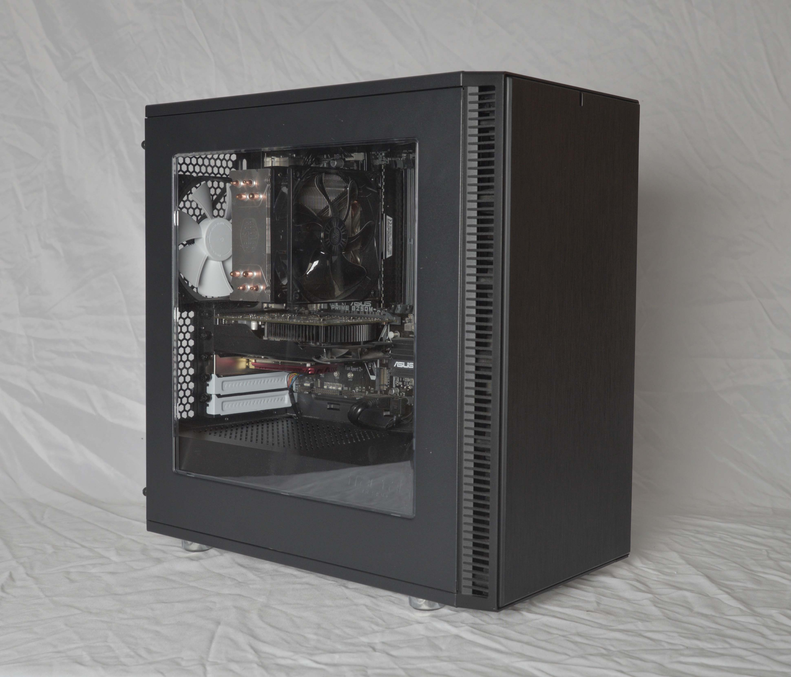
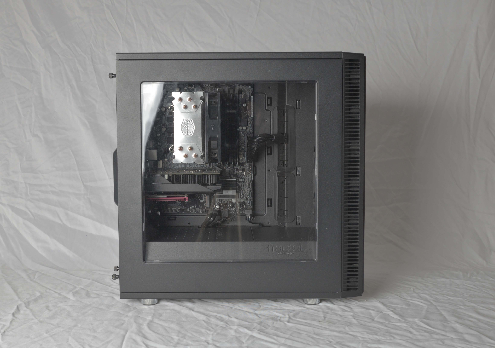
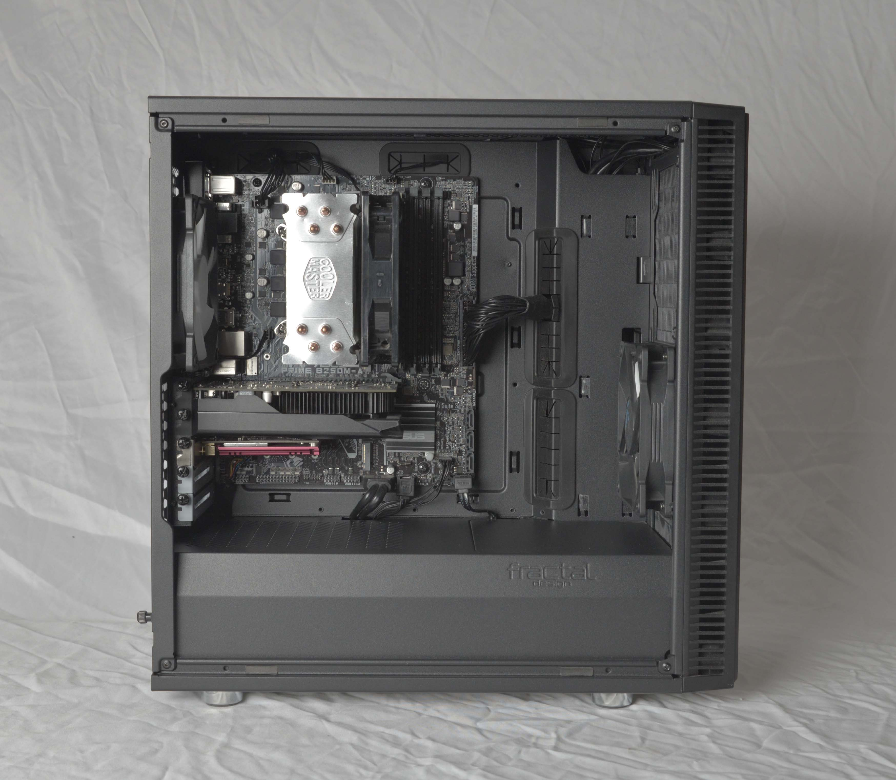
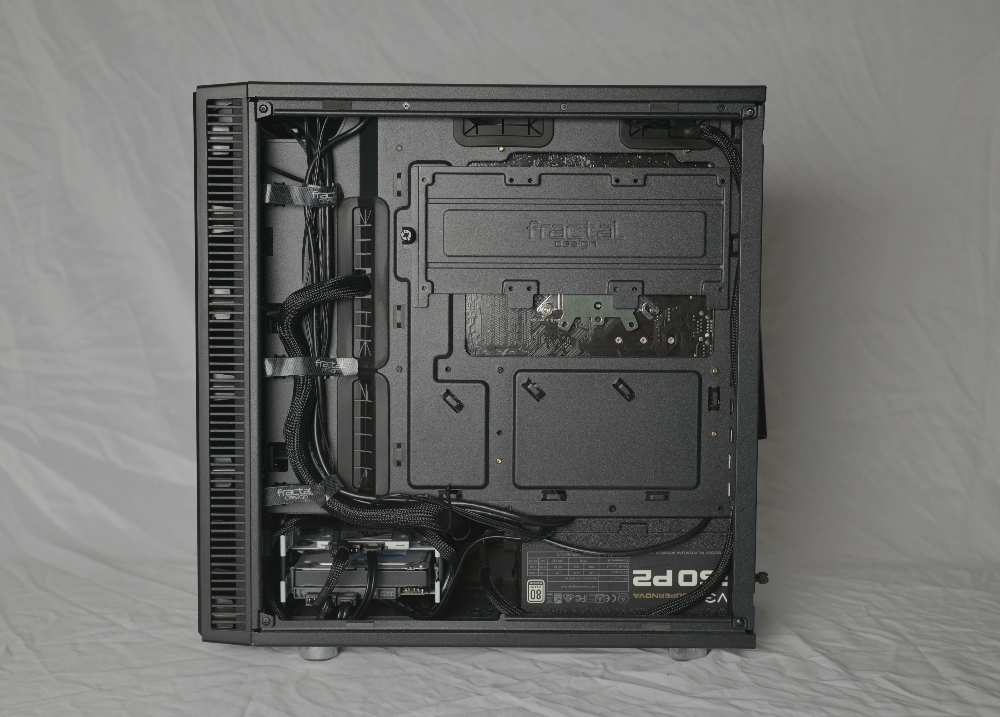
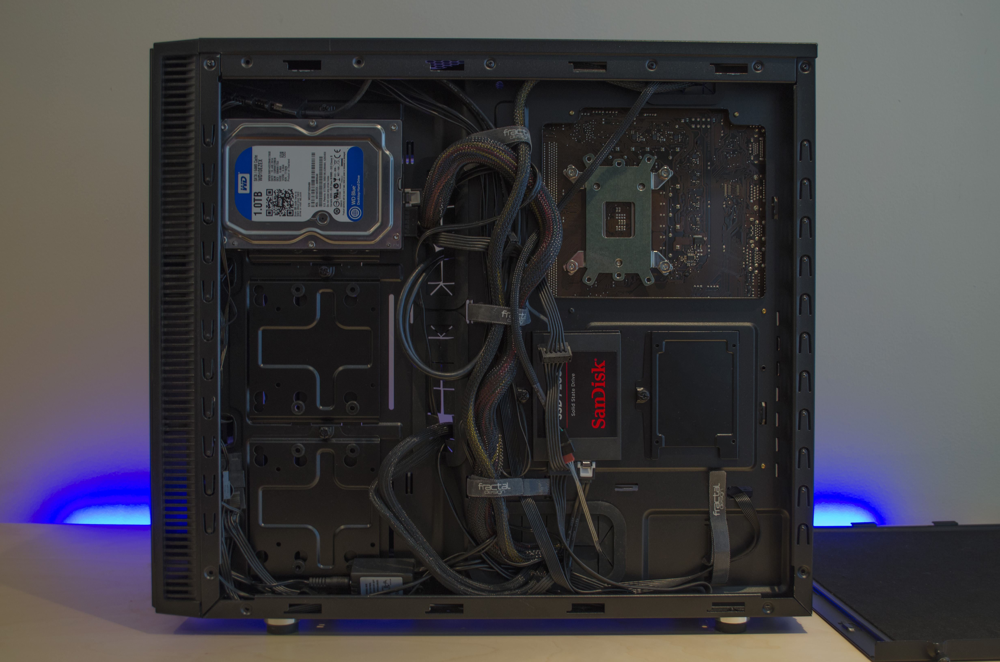
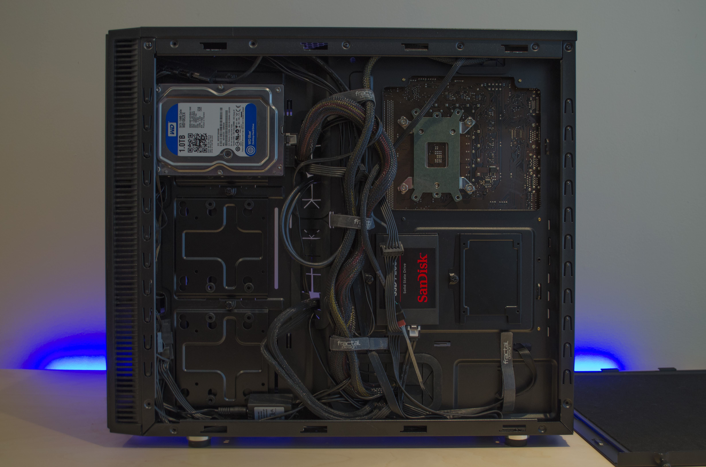

Desktops
Some of my PCs that I put together over the years.
My most recent PC. Sporting a Ryzen 5 5600x, 16GB of DDR4 Memory and an RX 6600 this PC is capable of anything I throw at it. As much as I love this PC, I still use my laptop for most things since the portability of it makes it more preferable to me.


An older PC at this point, but I really liked putting it together! The PC looks really clean thanks to the case which was from Fractal (Define C?). The CPU was an i5 7400 and the GPU was a GTX 750ti.
 
 
One of my older projects, but one I was really proud of. I put this together a long time ago and I really loved this machine. This computer had an i7 3770, 12GB of DDR3 Memory and a GTX 970. I used plasti-dip to paint the Memory modules white to get a cleaner "asthetic" since the modules were orignally a bright red.


 
